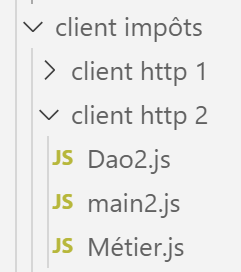
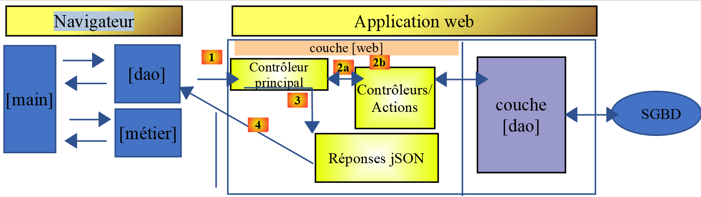
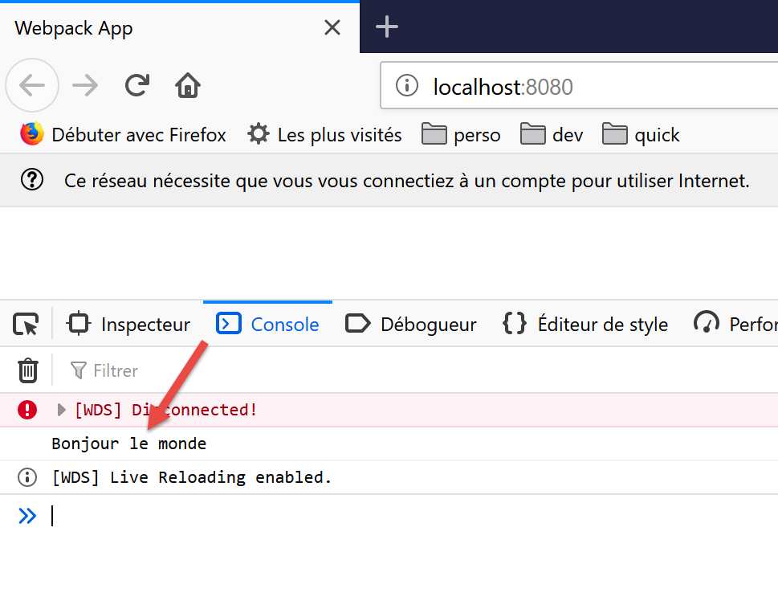

14. HTTP-Javascript-Clients des Steuerberechnungsdienstes
14.1. Introduction
Wir beabsichtigen hier, einen Client [node.js] für Version 14 des Steuerberechnungsdienstes zu schreiben. Die Client-Server-Architektur sieht wie folgt aus:

Wir werden zwei Versionen des Clients betrachten:
- Die Version 1 des Clients weist die folgende Schichtenstruktur auf: [main, dao]

- Version 2 des Clients wird die Struktur [main, métier, dao] aufweisen. Die Serverschicht [métier] wird auf den Client verlagert:

14.2. Client HTTP 1

Wie bereits erwähnt, implementiert der Client HTTP 1 die folgende Client-Server-Architektur:

Wir werden Folgendes implementieren:
- die Schicht [dao] in Form einer Klasse;
- die Schicht [main] in Form eines Skripts, das diese Klasse verwendet;
14.2.1. Die Schicht [dao]
Die Schicht [dao] wird durch die folgende Klasse [Dao1.js] implementiert:
'use strict';
// Importe
import qs from 'qs'
class Dao1 {
// Konstruktor
constructor(axios) {
// Axios-Bibliothek zur Durchführung von Anfragen HTTP
this.axios = axios;
// Sitzungs-Cookie
this.sessionCookieName = "PHPSESSID";
this.sessionCookie = '';
}
// Sitzung starten
async initSession() {
// Abfrageoptionen HHTP [get /main.php?action=init-session&type=json]
const options = {
method: "GET",
// Parameter der Abfrage URL
params: {
action: 'init-session',
type: 'json'
}
};
// Ausführung der Abfrage HTTP
return await this.getRemoteData(options);
}
async authentifierUtilisateur(user, password) {
// Optionen der Abfrage HHTP [post /main.php?action=authentifier-utilisateur]
const options = {
method: "POST",
headers: {
'Content-Type: 'application/x-www-form-urlencoded',
},
// Hauptteil des POST
data: qs.stringify({
user: user,
password: password
}),
// Parameter der URL
params: {
action: 'authentifier-utilisateur'
}
};
// Ausführung der Abfrage HTTP
return await this.getRemoteData(options);
}
// Steuerberechnung
async calculerImpot(marié, enfants, salaire) {
// Optionen der Anfrage HHTP [post /main.php?action=calculer-impot]
const options = {
method: "POST",
headers: {
'„Content-type“: „application/x-www-form-urlencoded“,
},
// Hauptteil des POST [marié, enfants, salaire]
data: qs.stringify({
marié: marié,
enfants: enfants,
salaire: salaire
}),
// Parameter des URL
params: {
action: 'calculer-impot'
}
};
// Ausführung der Abfrage HTTP
const data = await this.getRemoteData(options);
// Ergebnis
return data;
}
// Liste der Simulationen
async listeSimulations() {
// Optionen der Abfrage HHTP [get /main.php?action=lister-simulations]
const options = {
method: "GET",
// Parameter der Abfrage URL
params: {
action: 'lister-simulations'
},
};
// Ausführung der Abfrage HTTP
const data = await this.getRemoteData(options);
// Ergebnis
return data;
}
// Liste der Simulationen
async supprimerSimulation(index) {
// Optionen der Abfrage HHTP [get /main.php?action=supprimer-simulation&numéro=index]
const options = {
method: "GET",
// Parameter der Abfrage URL
params: {
action: 'supprimer-simulation',
numéro: index
},
};
// Ausführung der Abfrage HTTP
const data = await this.getRemoteData(options);
// Ergebnis
return data;
}
async getRemoteData(options) {
// für das Sitzungs-Cookie
if (!options.headers) {
options.headers = {};
}
options.headers.Cookie = this.sessionCookie;
// Ausführung der Anfrage HTTP
let response;
try {
// asynchrone Anfrage
response = await this.axios.request('main.php', options);
} catch (error) {
// Der Parameter [error] ist eine Ausnahmeinstanz – er kann verschiedene Formen annehmen
if (error.response) {
// Die Antwort des Servers befindet sich in [error.response]
response = error.response;
} else {
// Der Fehler wird erneut ausgelöst
throw error;
}
}
// „response“ ist die gesamte Antwort HTTP des Servers (Header HTTP + die Antwort selbst)
// Das Sitzungs-Cookie wird abgerufen, sofern es vorhanden ist
const setCookie = response.headers['set-cookie'];
if (setCookie) {
// setCookie ist ein Array
// Das Sitzungs-Cookie wird in diesem Array gesucht
let trouvé = false;
let i = 0;
while (!trouvé && i < setCookie.length) {
// Das Session-Cookie wird gesucht
const results = RegExp('^(' + this.sessionCookieName + '.+?);').exec(setCookie[i]);
if (results) {
// Das Session-Cookie wird gespeichert
// eslint-disable-next-line require-atomic-updates
this.sessionCookie = results[1];
// Es wurde gefunden
trouvé = true;
} else {
// nächstes Element
i++;
}
}
}
// Die Antwort des Servers lautet: [response.data]
return response.data;
}
}
// Export der Klasse
export default Dao1;
- Wir wenden hier das an, was wir im Abschnitt „Link“ gelernt haben, in dem wir die Bibliothek [axios] vorgestellt haben, mit der sich HTTP-Abfragen sowohl unter [node.js] als auch in einem Browser ausführen lassen. Wir werden uns insbesondere das Skript aus dem Abschnitt „Link“ ansehen;
- Zeilen 9–15: der Konstruktor der Klasse. Diese wird drei Eigenschaften haben:
- [axios]: das Objekt [axios], mit dem die Abfragen HTTP durchgeführt werden können. Dieses wird vom aufrufenden Code übergeben;
- [sessionCookieName]: Je nach Server hat das Sitzungs-Cookie unterschiedliche Namen. Hier lautet es [PHPSESSID];
- [sessionCookie]: Das vom Server gesendete und vom Client gespeicherte Sitzungs-Cookie;
- Zeilen 53–76: Die asynchrone Funktion [calculerImpot] führt die Anfrage [post /main.php?action=calculer-impot] durch und übermittelt dabei die Parameter [marié, enfants, salaire]. Sie gibt die vom Server übermittelte Zeichenkette jSON in Form eines JavaScript-Objekts zurück;
- Zeilen 79–92: Die asynchrone Funktion [listeSimulations] führt die Anfrage [$status, $état, [‘réponse’=>$response]] aus. Sie gibt die vom Server übermittelte Zeichenfolge jSON als JavaScript-Objekt zurück;
- Zeilen 95–109: Die asynchrone Funktion [supprimerSimulation] führt die Anfrage [get /main.php?action=supprimer-simulation&numéro=index] aus. Sie gibt die vom Server übermittelte Zeichenfolge jSON in Form eines JavaScript-Objekts zurück;
- Zeile 121: Es wird die Notation [this.axios] verwendet, da hier das an den Konstruktor übergebene Objekt [axios] in der Eigenschaft [this.axios] gespeichert wurde;
- Zeile 161: Die Klasse [Dao1] wird exportiert, damit sie verwendet werden kann;
14.2.2. Das Skript [main1.js]
Das Skript [main1.js] führt mithilfe der Klasse [Dao1] eine Reihe von Aufrufen an den Server durch:
- Initialisierung einer Sitzung jSON;
- Authentifizierung mit [admin, admin];
- fordert drei Steuerberechnungen an;
- fordert die Liste der Simulationen an;
- löscht eine davon;
Der Code lautet wie folgt:
// Import von Axios
import axios from 'axios';
// Import der Klasse Dao1
import Dao from './Dao1';
// asynchrone Funktion [main]
async function main() {
// Axios-Konfiguration
axios.defaults.timeout = 2000;
axios.defaults.baseURL = 'http://localhost/php7/scripts-web/impots/version-14';
// Instanziierung der Schicht [dao]
const dao = new Dao(axios);
// Verwendung der Schicht [dao]
try {
// Sitzung initialisieren
log("-----------init-session");
let response = await dao.initSession();
log(response);
// Authentifizierung
log("-----------authentifier-utilisateur");
response = await dao.authentifierUtilisateur("admin", "admin");
log(response);
// Steuerberechnungen
log("-----------calculer-impot x 3");
response = await Promise.all([
dao.calculerImpot("oui", 2, 45000),
dao.calculerImpot("non", 2, 45000),
dao.calculerImpot("non", 1, 30000)
]);
log(response);
// Liste der Simulationen
log("-----------liste-des-simulations");
response = await dao.listeSimulations();
log(response);
// Löschen einer Simulation
log("-----------suppression simulation n° 1");
response = await dao.supprimerSimulation(1);
log(response);
} catch (error) {
// Fehler wird protokolliert
console.log("erreur=", error.message);
}
}
// Protokoll jSON
function log(object) {
console.log(JSON.stringify(object, null, 2));
}
// Ausführung
main();
Kommentare
- Zeile 2: Die Bibliothek [axios] wird importiert;
- Zeile 4: Die Klasse [Dao] wird importiert;
- Zeile 7: Die Funktion [main], die mit dem Server kommuniziert, ist asynchron;
- Zeilen 9–10: Standardkonfiguration der Anfragen HTTP, die an den Server gesendet werden:
- Zeile 9: [timeout] mit einer Dauer von 2 Sekunden;
- Zeile 10: Alle URL haben als Präfix die Basis-URL der Version 14 des Steuerberechnungsservers;
- Zeile 12: Die Ebene [Dao] wird erstellt. Sie kann nun verwendet werden;
- Zeilen 46–48: Die Funktion [log] dient dazu, die Zeichenfolge jSON eines JavaScript-Objekts in einer aufbereiteten Form anzuzeigen: vertikal mit einer Einrückung von zwei Leerzeichen (3. Parameter);
- Zeilen 15–18: Initialisierung der Sitzung jSON;
- Zeilen 19–22: Authentifizierung;
- Zeilen 23–30: Es werden drei Steuerberechnungen parallel angefordert. Dank [await Promise.all] wird die Ausführung blockiert, bis alle drei Ergebnisse vorliegen;
- Zeilen 31–34: Liste der Simulationen;
- Zeilen 35–38: Löschen einer Simulation;
- Zeilen 39–42: Behandlung einer möglichen Ausnahme;
Die Ergebnisse der Ausführung lauten wie folgt:
[Running] C:\myprograms\laragon-lite\bin\nodejs\node-v10\node.exe -r esm "c:\Data\st-2019\dev\es6\javascript\client impôts\client http 1\main1.js"
"-----------init-session"
{
"action": "init-session",
"état": 700,
"réponse": "session démarrée avec type [json]"
}
"-----------authentifier-utilisateur"
{
"action": "authentifier-utilisateur",
"état": 200,
"réponse": "Authentification réussie [admin, admin]"
}
"-----------calculer-impot x 3"
[
{
"action": "calculer-impot",
"état": 300,
"réponse": {
"marié": "oui",
"enfants": "2",
"salaire": "45000",
"impôt": 502,
"surcôte": 0,
"décôte": 857,
"réduction": 126,
"taux": 0.14
}
},
{
"action": "calculer-impot",
"état": 300,
"réponse": {
"marié": "non",
"enfants": "2",
"salaire": "45000",
"impôt": 3250,
"surcôte": 370,
"décôte": 0,
"réduction": 0,
"taux": 0.3
}
},
{
"action": "calculer-impot",
"état": 300,
"réponse": {
"marié": "non",
"enfants": "1",
"salaire": "30000",
"impôt": 1687,
"surcôte": 0,
"décôte": 0,
"réduction": 0,
"taux": 0.14
}
}
]
"-----------liste-des-simulations"
{
"action": "lister-simulations",
"état": 500,
"réponse": [
{
"marié": "oui",
"enfants": "2",
"salaire": "45000",
"impôt": 502,
"surcôte": 0,
"décôte": 857,
"réduction": 126,
"taux": 0.14,
"arrayOfAttributes": null
},
{
"marié": "non",
"enfants": "2",
"salaire": "45000",
"impôt": 3250,
"surcôte": 370,
"décôte": 0,
"réduction": 0,
"taux": 0.3,
"arrayOfAttributes": null
},
{
"marié": "non",
"enfants": "1",
"salaire": "30000",
"impôt": 1687,
"surcôte": 0,
"décôte": 0,
"réduction": 0,
"taux": 0.14,
"arrayOfAttributes": null
}
]
}
"-----------suppression simulation n° 1"
{
"action": "supprimer-simulation",
"état": 600,
"réponse": [
{
"marié": "oui",
"enfants": "2",
"salaire": "45000",
"impôt": 502,
"surcôte": 0,
"décôte": 857,
"réduction": 126,
"taux": 0.14,
"arrayOfAttributes": null
},
{
"marié": "non",
"enfants": "1",
"salaire": "30000",
"impôt": 1687,
"surcôte": 0,
"décôte": 0,
"réduction": 0,
"taux": 0.14,
"arrayOfAttributes": null
}
]
}
[Done] exited with code=0 in 0.516 seconds
14.3. Client HTTP 2

Die Architektur des Clients HTTP2 sieht wie folgt aus:

Die Schicht [métier] wurde vom Server auf den JavaScript-Client verlagert. Anders als im Kurs PHP7 muss die Schicht [main] hier nicht über die Schicht [métier] laufen, um die Schicht [dao] zu erreichen. Wir werden diese beiden Schichten als Kompetenzzentren nutzen:
- Die Ebene [main] greift auf die Ebene [dao] zurück, sobald sie Daten benötigt, die sich auf dem Server befinden;
- die Schicht [main] beauftragt die Schicht [métier] mit der Durchführung der Steuerberechnungen;
- Die Schicht [métier] ist unabhängig von der Schicht [dao] und ruft diese niemals auf;
14.3.1. Die JavaScript-Klasse [Métier]
Die Umwandlung der Klasse [Métier] in PHP wurde im Artikel unter dem Link beschrieben. Es handelt sich um einen recht komplexen Code, den wir hier nicht zur Erklärung, sondern zur Übersetzung in JavaScript wiedergeben:
<?php
// Namensraum
namespace Application;
class Metier implements InterfaceMetier {
// Dao-Ebene
private $dao;
// Daten der Steuerverwaltung
private $taxAdminData;
//---------------------------------------------
// Setter der Schicht [dao]
public function setDao(InterfaceDao $dao) {
$this->dao = $dao;
return $this;
}
public function __construct(InterfaceDao $dao) {
// Es wird eine Referenz auf die Schicht [dao] gespeichert
$this->dao = $dao;
// Die Daten für die Steuerberechnung werden abgerufen
// Die Methode [getTaxAdminData] kann eine Ausnahme ExceptionImpots auslösen
// diese wird dann an den aufrufenden Code weitergeleitet
$this->taxAdminData = $this->dao->getTaxAdminData();
}
// Steuerberechnung
// --------------------------------------------------------------------------
public function calculerImpot(string $marié, int $enfants, int $salaire): array {
// $marié: ja, nein
// $enfants: Anzahl der Kinder
// $salaire: Jahresgehalt
// $this->taxAdminData: Daten der Steuerbehörde
//
// Es wird überprüft, ob die Daten der Steuerbehörde vorliegen
if ($this->taxAdminData === NULL) {
$this->taxAdminData = $this->getTaxAdminData();
}
// Steuerberechnung mit Kindern
$result1 = $this->calculerImpot2($marié, $enfants, $salaire);
$impot1 = $result1["impôt"];
// Berechnung der Steuer ohne Kinder
if ($enfants != 0) {
$result2 = $this->calculerImpot2($marié, 0, $salaire);
$impot2 = $result2["impôt"];
// Anwendung der Obergrenze für den Familienquotienten
$plafonDemiPart = $this->taxAdminData->getPlafondQfDemiPart();
if ($enfants < 3) {
// $PLAFOND_QF_DEMI_PART Euro für die ersten beiden Kinder
$impot2 = $impot2 - $enfants * $plafonDemiPart;
} else {
// $PLAFOND_QF_DEMI_PART Euro für die ersten beiden Kinder, das Doppelte für die folgenden
$impot2 = $impot2 - 2 * $plafonDemiPart - ($enfants - 2) * 2 * $plafonDemiPart;
}
} else {
$impot2 = $impot1;
$result2 = $result1;
}
// Man wählt den höchsten Steuersatz
if ($impot1 > $impot2) {
$impot = $impot1;
$taux = $result1["taux"];
$surcôte = $result1["surcôte"];
} else {
$surcôte = $impot2 - $impot1 + $result2["surcôte"];
$impot = $impot2;
$taux = $result2["taux"];
}
// Berechnung eines möglichen Steuerabzugs
$décôte = $this->getDecôte($marié, $salaire, $impot);
$impot -= $décôte;
// Berechnung einer eventuellen Steuerermäßigung
$réduction = $this->getRéduction($marié, $salaire, $enfants, $impot);
$impot -= $réduction;
// Ergebnis
return ["impôt" => floor($impot), "surcôte" => $surcôte, "décôte" => $décôte, "réduction" => $réduction, "taux" => $taux];
}
// --------------------------------------------------------------------------
private function calculerImpot2(string $marié, int $enfants, float $salaire): array {
// $marié: ja, nein
// $enfants: Anzahl der Kinder
// $salaire: Jahresgehalt
// $this->taxAdminData: Daten der Steuerbehörde
//
// Anzahl der Anteile
$marié = strtolower($marié);
if ($marié === "oui") {
$nbParts = $enfants / 2 + 2;
} else {
$nbParts = $enfants / 2 + 1;
}
// 1 Anteil pro Kind ab dem dritten
if ($enfants >= 3) {
// ein halber Anteil zusätzlich für jedes Kind ab dem dritten
$nbParts += 0.5 * ($enfants - 2);
}
// steuerpflichtiges Einkommen
$revenuImposable = $this->getRevenuImposable($salaire);
// Zuschlag
$surcôte = floor($revenuImposable - 0.9 * $salaire);
// bei Rundungsproblemen
if ($surcôte < 0) {
$surcôte = 0;
}
// Familienquotient
$quotient = $revenuImposable / $nbParts;
// Steuerberechnung
$limites = $this->taxAdminData->getLimites();
$coeffR = $this->taxAdminData->getCoeffR();
$coeffN = $this->taxAdminData->getCoeffN();
// wird am Ende der Grenzwertetabelle eingefügt, um die nachfolgende Schleife zu beenden
$limites[count($limites) - 1] = $quotient;
// Ermittlung des Steuersatzes
$i = 0;
while ($quotient > $limites[$i]) {
$i++;
}
// da $quotient am Ende des Arrays $limites platziert wurde, wird die vorherige Schleife
// darf nicht über das Array $limites hinausgehen
// Nun kann die Steuer berechnet werden
$impôt = floor($revenuImposable * $coeffR[$i] - $nbParts * $coeffN[$i]);
// Ergebnis
return ["impôt" => $impôt, "surcôte" => $surcôte, "taux" => $coeffR[$i]];
}
// revenuImposable = Jahresgehalt – Freibetrag
// Der Freibetrag hat einen Mindest- und einen Höchstwert
private function getRevenuImposable(float $salaire): float {
// Freibetrag in Höhe von 10 % des Gehalts
$abattement = 0.1 * $salaire;
// Dieser Freibetrag darf $this->taxAdminData nicht überschreiten->getAbattementDixPourCentMax()
if ($abattement > $this->taxAdminData->getAbattementDixPourCentMax()) {
$abattement = $this->taxAdminData->getAbattementDixPourcentMax();
}
// Der Freibetrag darf nicht unter $this->taxAdminData liegen->getAbattementDixPourcentMin()
if ($abattement < $this->taxAdminData->getAbattementDixPourcentMin()) {
$abattement = $this->taxAdminData->getAbattementDixPourcentMin();
}
// steuerpflichtiges Einkommen
$revenuImposable = $salaire - $abattement;
// Ergebnis
return floor($revenuImposable);
}
// berechnet einen eventuellen Abschlag
private function getDecôte(string $marié, float $salaire, float $impots): float {
// Anfangswert: Null-Abschlag
$décôte = 0;
// Höchststeuerbetrag für den Abzug
$plafondImpôtPourDécôte = $marié === "oui" ?
$this->taxAdminData->getPlafondImpotCouplePourDecote() :
$this->taxAdminData->getPlafondImpotCelibatairePourDecote();
if ($impots < $plafondImpôtPourDécôte) {
// Maximaler Abschlagbetrag
$plafondDécôte = $marié === "oui" ?
$this->taxAdminData->getPlafondDecoteCouple() :
$this->taxAdminData->getPlafondDecoteCelibataire();
// theoretischer Abschlag
$décôte = $plafondDécôte - 0.75 * $impots;
// Der Abschlag darf den Steuerbetrag nicht überschreiten
if ($décôte > $impots) {
$décôte = $impots;
}
// kein Abschlag <0
if ($décôte < 0) {
$décôte = 0;
}
}
// Ergebnis
return ceil($décôte);
}
// berechnet eine eventuelle Ermäßigung
private function getRéduction(string $marié, float $salaire, int $enfants, float $impots): float {
// Einkommensobergrenze für den Anspruch auf die Ermäßigung von 20 %
$plafondRevenuPourRéduction = $marié === "oui" ?
$this->taxAdminData->getPlafondRevenusCouplePourReduction() :
$this->taxAdminData->getPlafondRevenusCelibatairePourReduction();
$plafondRevenuPourRéduction += $enfants * $this->taxAdminData->getValeurReducDemiPart();
if ($enfants > 2) {
$plafondRevenuPourRéduction += ($enfants - 2) * $this->taxAdminData->getValeurReducDemiPart();
}
// steuerpflichtiges Einkommen
$revenuImposable = $this->getRevenuImposable($salaire);
// Ermäßigung
$réduction = 0;
if ($revenuImposable < $plafondRevenuPourRéduction) {
// Ermäßigung von 20 %
$réduction = 0.2 * $impots;
}
// Ergebnis
return ceil($réduction);
}
// Steuerberechnung im Batch-Modus
public function executeBatchImpots(string $taxPayersFileName, string $resultsFileName, string $errorsFileName): void {
// Ausnahmen, die aus der Schicht [dao] stammen, werden weitergeleitet
// Steuerpflichtige Daten werden abgerufen
$taxPayersData = $this->dao->getTaxPayersData($taxPayersFileName, $errorsFileName);
// Ergebnistabelle
$results = [];
// Auswertung der Ergebnisse
foreach ($taxPayersData as $taxPayerData) {
// Die Steuer wird berechnet
$result = $this->calculerImpot(
$taxPayerData->getMarié(),
$taxPayerData->getEnfants(),
$taxPayerData->getSalaire());
// Ausfüllen von [$taxPayerData]
$taxPayerData->setMontant($result["impôt"]);
$taxPayerData->setDécôte($result["décôte"]);
$taxPayerData->setSurCôte($result["surcôte"]);
$taxPayerData->setTaux($result["taux"]);
$taxPayerData->setRéduction($result["réduction"]);
// das Ergebnis wird in die Ergebnistabelle eingetragen
$results [] = $taxPayerData;
}
// Speichern der Ergebnisse
$this->dao->saveResults($resultsFileName, $results);
}
}
- Zeilen 19–26: der Konstruktor der Klasse PHP. Da wir gesagt haben, dass wir eine von der Schicht [dao] unabhängige Schicht [métier] erstellen, nehmen wir in JavaScript zwei Änderungen an diesem Konstruktor vor:
- Er erhält keine Instanz der Schicht [dao] (diese benötigt er nicht mehr);
- er wird die Steuerdaten der Behörde [taxAdminData] nicht von der Schicht [dao] anfordern: Der aufrufende Code wird diese Daten an den Konstruktor übermitteln;
- Zeilen 197–122: Wir werden die Methode [executeBatchImpots] nicht implementieren, deren eigentlicher Zweck darin bestand, Simulationsergebnisse in einer Textdatei zu speichern. Wir wollen einen Code, der sowohl unter [node.js] als auch in einem Browser funktioniert. Das Speichern von Daten im Dateisystem des Rechners, auf dem der Client-Browser läuft, ist jedoch nicht möglich;
Unter Berücksichtigung dieser Einschränkungen lautet der Code der JavaScript-Klasse [Métier] wie folgt:
'use strict';
// Klasse „Métier“
class Métier {
// Konstruktor
constructor(taxAdmindata) {
// this.taxAdminData: Daten der Steuerbehörde
this.taxAdminData = taxAdmindata;
}
// Steuerberechnung
// --------------------------------------------------------------------------
calculerImpot(marié, enfants, salaire) {
// verheiratet: ja, nein
// Kinder: Anzahl der Kinder
// Gehalt: Jahresgehalt
// this.taxAdminData: Daten der Steuerbehörde
//
// Steuerberechnung mit Kindern
const result1 = this.calculerImpot2(marié, enfants, salaire);
const impot1 = result1["impôt"];
// Steuerberechnung ohne Kinder
let result2, impot2, plafondDemiPart;
if (enfants !== 0) {
result2 = this.calculerImpot2(marié, 0, salaire);
impot2 = result2["impôt"];
// Anwendung der Obergrenze für den Familienquotienten
plafondDemiPart = this.taxAdminData.plafondQfDemiPart;
if (enfants < 3) {
// PLAFOND_QF_DEMI_PART Euro für die ersten beiden Kinder
impot2 = impot2 - enfants * plafondDemiPart;
} else {
// PLAFOND_QF_DEMI_PART Euro für die ersten beiden Kinder, das Doppelte für die folgenden
impot2 = impot2 - 2 * plafondDemiPart - (enfants - 2) * 2 * plafondDemiPart;
}
} else {
// keine Neuberechnung der Steuer
impot2 = impot1;
result2 = result1;
}
// Es wird die höchste Steuer aus [impot1, impot2] herangezogen
let impot, taux, surcôte;
if (impot1 > impot2) {
impot = impot1;
taux = result1["taux"];
surcôte = result1["surcôte"];
} else {
surcôte = impot2 - impot1 + result2["surcôte"];
impot = impot2;
taux = result2["taux"];
}
// Berechnung eines eventuellen Steuerabzugs
const décôte = this.getDecôte(marié, impot);
impot -= décôte;
// Berechnung einer möglichen Steuerermäßigung
const réduction = this.getRéduction(marié, salaire, enfants, impot);
impot -= réduction;
// Ergebnis
return {
"impôt": Math.floor(impot), "surcôte": surcôte, "décôte": décôte, "réduction": réduction,
"taux": taux
};
}
// --------------------------------------------------------------------------
calculerImpot2(marié, enfants, salaire) {
// verheiratet: ja, nein
// Kinder: Anzahl der Kinder
// Gehalt: Jahresgehalt
// this->taxAdminData: Daten der Steuerbehörde
//
// Anzahl der Anteile
marié = marié.toLowerCase();
let nbParts;
if (marié === "oui") {
nbParts = enfants / 2 + 2;
} else {
nbParts = enfants / 2 + 1;
}
// 1 Anteil pro Kind ab dem dritten
if (enfants >= 3) {
// ein halber Anteil zusätzlich für jedes Kind ab dem dritten
nbParts += 0.5 * (enfants - 2);
}
// steuerpflichtiges Einkommen
const revenuImposable = this.getRevenuImposable(salaire);
// Zuschlag
let surcôte = Math.floor(revenuImposable - 0.9 * salaire);
// wegen Rundungsproblemen
if (surcôte < 0) {
surcôte = 0;
}
// Familienquotient
const quotient = revenuImposable / nbParts;
// Steuerberechnung
const limites = this.taxAdminData.limites;
const coeffR = this.taxAdminData.coeffR;
const coeffN = this.taxAdminData.coeffN;
// wird am Ende der Grenzwertetabelle eingefügt, um die nachfolgende Schleife zu beenden
limites[limites.length - 1] = quotient;
// Ermittlung des Steuersatzes
let i = 0;
while (quotient > limites[i]) {
i++;
}
// Da der Familienquotient am Ende des Grenzwert-Arrays platziert wurde, wird die vorherige Schleife
// kann nicht über die Grenzen des Begrenzungstabells hinausgehen
// Nun kann die Steuer berechnet werden
const impôt = Math.floor(revenuImposable * coeffR[i] - nbParts * coeffN[i]);
// Ergebnis
return { "impôt": impôt, "surcôte": surcôte, "taux": coeffR[i] };
}
// revenuImposable = Jahresgehalt – Freibetrag
// Der Freibetrag hat einen Mindest- und einen Höchstwert
getRevenuImposable(salaire) {
// Abzug von 10 % des Gehalts
let abattement = 0.1 * salaire;
// Dieser Freibetrag darf taxAdminData.getAbattementDixPourCentMax() nicht überschreiten
if (abattement > this.taxAdminData.abattementDixPourCentMax) {
abattement = this.taxAdminData.abattementDixPourcentMax;
}
// Der Freibetrag darf nicht unter taxAdminData.getAbattementDixPourcentMin() liegen
if (abattement < this.taxAdminData.abattementDixPourcentMin) {
abattement = this.taxAdminData.abattementDixPourcentMin;
}
// steuerpflichtiges Einkommen
const revenuImposable = salaire - abattement;
// Ergebnis
return Math.floor(revenuImposable);
}
// berechnet einen eventuellen Abschlag
getDecôte(marié, impots) {
// Anfangswert: Null-Abschlag
let décôte = 0;
// Höchststeuerbetrag für den Abzug
let plafondImpôtPourDécôte = marié === "oui" ?
this.taxAdminData.plafondImpotCouplePourDecote :
this.taxAdminData.plafondImpotCelibatairePourDecote;
let plafondDécôte;
if (impots < plafondImpôtPourDécôte) {
// Maximaler Abschlagbetrag
plafondDécôte = marié === "oui" ?
this.taxAdminData.plafondDecoteCouple :
this.taxAdminData.plafondDecoteCelibataire;
// theoretischer Abschlag
décôte = plafondDécôte - 0.75 * impots;
// Der Abschlag darf den Steuerbetrag nicht überschreiten
if (décôte > impots) {
décôte = impots;
}
// kein Abschlag <0
if (décôte < 0) {
décôte = 0;
}
}
// Ergebnis
return Math.ceil(décôte);
}
// berechnet eine eventuelle Ermäßigung
getRéduction(marié, salaire, enfants, impots) {
// Einkommensobergrenze für den Anspruch auf die Ermäßigung von 20 %
let plafondRevenuPourRéduction = marié === "oui" ?
this.taxAdminData.plafondRevenusCouplePourReduction :
this.taxAdminData.plafondRevenusCelibatairePourReduction;
plafondRevenuPourRéduction += enfants * this.taxAdminData.valeurReducDemiPart;
if (enfants > 2) {
plafondRevenuPourRéduction += (enfants - 2) * this.taxAdminData.valeurReducDemiPart;
}
// steuerpflichtiges Einkommen
const revenuImposable = this.getRevenuImposable(salaire);
// Ermäßigung
let réduction = 0;
if (revenuImposable < plafondRevenuPourRéduction) {
// Ermäßigung von 20 %
réduction = 0.2 * impots;
}
// Ergebnis
return Math.ceil(réduction);
}
}
// Export der Klasse
export default Métier;
- Der JavaScript-Code folgt genau dem Code PHP;
- Die Klasse [Métier] wird exportiert, Zeile 187;
14.3.2. Die JavaScript-Klasse [Dao2]

Die Klasse [Dao2] implementiert die Schicht [dao] des oben genannten JavaScript-Clients wie folgt:
'use strict';
// Importe
import qs from 'qs'
class Dao2 {
// Konstruktor
constructor(axios) {
this.axios = axios;
// Sitzungs-Cookie
this.sessionCookieName = "PHPSESSID";
this.sessionCookie = '';
}
// Sitzung initialisieren
async initSession() {
// Anfrageoptionen HHTP [get /main.php?action=init-session&type=json]
const options = {
method: "GET",
// Parameter der Abfrage URL
params: {
action: 'init-session',
type: 'json'
}
};
// Ausführung der Abfrage HTTP
return await this.getRemoteData(options);
}
async authentifierUtilisateur(user, password) {
// Optionen der Abfrage HHTP [post /main.php?action=authentifier-utilisateur]
const options = {
method: "POST",
headers: {
'Content-Type: 'application/x-www-form-urlencoded',
},
// Hauptteil des POST
data: qs.stringify({
user: user,
password: password
}),
// Parameter der URL
params: {
action: 'authentifier-utilisateur'
}
};
// Ausführung der Abfrage HTTP
return await this.getRemoteData(options);
}
async getAdminData() {
// Optionen der Abfrage HHTP [get /main.php?action=get-admindata]
const options = {
method: "GET",
// Parameter der Abfrage URL
params: {
action: 'get-admindata'
}
};
// Ausführung der Abfrage HTTP
const data = await this.getRemoteData(options);
// Ergebnis
return data;
}
async getRemoteData(options) {
// für das Sitzungs-Cookie
if (!options.headers) {
options.headers = {};
}
options.headers.Cookie = this.sessionCookie;
// Ausführung der Abfrage HTTP
let response;
try {
// asynchrone Anfrage
response = await this.axios.request('main.php', options);
} catch (error) {
// Der Parameter [error] ist eine Ausnahmeinstanz – er kann verschiedene Formen annehmen
if (error.response) {
// Die Antwort des Servers befindet sich in [error.response]
response = error.response;
} else {
// Der Fehler wird erneut ausgelöst
throw error;
}
}
// „response“ ist die gesamte Antwort HTTP des Servers (Header HTTP + die Antwort selbst)
// Das Sitzungs-Cookie wird abgerufen, sofern es vorhanden ist
const setCookie = response.headers['set-cookie'];
if (setCookie) {
// setCookie ist ein Array
// Das Sitzungs-Cookie wird in diesem Array gesucht
let trouvé = false;
let i = 0;
while (!trouvé && i < setCookie.length) {
// Das Session-Cookie wird gesucht
const results = RegExp('^(' + this.sessionCookieName + '.+?);').exec(setCookie[i]);
if (results) {
// Das Session-Cookie wird gespeichert
// eslint-disable-next-line require-atomic-updates
this.sessionCookie = results[1];
// Es wurde gefunden
trouvé = true;
} else {
// nächstes Element
i++;
}
}
}
// Die Antwort des Servers lautet: [response.data]
return response.data;
}
}
// Export der Klasse
export default Dao2;
Anmerkungen
- Die Klasse [Dao2] implementiert nur drei der möglichen Anfragen an den Steuerberechnungsserver:
- [init-session] (Zeilen 17–29): zur Initialisierung der Sitzung jSON;
- [authentifier-utilisateur] (Zeilen 31–50): zur Authentifizierung;
- [get-admindata] (Zeilen 52–65): zum Abrufen der Daten der Steuerbehörde, die die Steuerberechnungen auf der Client-Seite ermöglichen;
- Zeilen 52–65: Wir fügen eine neue Aktion [get-admindata] zum Server hinzu. Diese Aktion war bisher nicht implementiert. Das holen wir nun nach.
14.3.3. Änderung am Steuerberechnungsserver
Der Steuerberechnungsserver muss eine neue Aktion implementieren. Wir werden dies in Version 14 des Servers vornehmen. Die zu implementierende Aktion weist folgende Merkmale auf:
- Sie wird von einer Transaktion [get /main.php?action=get-admindata] angefordert;
- sie gibt die Zeichenfolge jSON eines Objekts zurück, das die Daten der Steuerbehörde kapselt;
Wir werden uns nun noch einmal ansehen, wie eine Aktion zu unserem Server hinzugefügt wird.
Die Änderung erfolgt in NetBeans:

In [2] bearbeiten wir die Datei [config.json], um die neue Aktion hinzuzufügen:
{
"databaseFilename": "Config/database.json",
"corsAllowed": true,
"rootDirectory": "C:/myprograms/laragon-lite/www/php7/scripts-web/impots/version-14",
"relativeDependencies": [
"/Entities/BaseEntity.php",
"/Entities/Simulation.php",
"/Entities/Database.php",
"/Entities/TaxAdminData.php",
"/Entities/ExceptionImpots.php",
"/Utilities/Logger.php",
"/Utilities/SendAdminMail.php",
"/Model/InterfaceServerDao.php",
"/Model/ServerDao.php",
"/Model/ServerDaoWithSession.php",
"/Model/InterfaceServerMetier.php",
"/Model/ServerMetier.php",
"/Responses/InterfaceResponse.php",
"/Responses/ParentResponse.php",
"/Responses/JsonResponse.php",
"/Responses/XmlResponse.php",
"/Responses/HtmlResponse.php",
"/Controllers/InterfaceController.php",
"/Controllers/InitSessionController.php",
"/Controllers/ListerSimulationsController.php",
"/Controllers/AuthentifierUtilisateurController.php",
"/Controllers/CalculerImpotController.php",
"/Controllers/SupprimerSimulationController.php",
"/Controllers/FinSessionController.php",
"/Controllers/AfficherCalculImpotController.php",
"/Controllers/AdminDataController.php"
],
"absoluteDependencies": [
"C:/myprograms/laragon-lite/www/vendor/autoload.php",
"C:/myprograms/laragon-lite/www/vendor/predis/predis/autoload.php"
],
"users": [
{
"login": "admin",
"passwd": "admin"
}
],
"adminMail": {
"smtp-server": "localhost",
"smtp-port": "25",
"from": "guest@localhost",
"to": "guest@localhost",
"subject": "plantage du serveur de calcul d'impôts",
"tls": "FALSE",
"attachments": []
},
"logsFilename": "Logs/logs.txt",
"actions":
{
"init-session": "\\InitSessionController",
"authentifier-utilisateur": "\\AuthentifierUtilisateurController",
"calculer-impot": "\\CalculerImpotController",
"lister-simulations": "\\ListerSimulationsController",
"supprimer-simulation": "\\SupprimerSimulationController",
"fin-session": "\\FinSessionController",
"afficher-calcul-impot": "\\AfficherCalculImpotController",
"get-admindata": "\\AdminDataController"
},
"types": {
"json": "\\JsonResponse",
"html": "\\HtmlResponse",
"xml": "\\XmlResponse"
},
"vues": {
"vue-authentification.php": [700, 221, 400],
"vue-calcul-impot.php": [200, 300, 341, 350, 800],
"vue-liste-simulations.php": [500, 600]
},
"vue-erreurs": "vue-erreurs.php"
}
Die Änderung umfasst Folgendes:
- Zeile 67: Die Aktion [get-admindata] hinzufügen und sie einem Controller zuordnen;
- Zeile 36: diesen Controller in der Liste der von der Anwendung PHP zu ladenden Klassen deklarieren;
Der nächste Schritt besteht darin, den Controller [AdminDataController] [3] zu implementieren:
<?php
namespace Application;
// Symfony-Abhängigkeiten
use \Symfony\Component\HttpFoundation\Response;
use \Symfony\Component\HttpFoundation\Request;
use \Symfony\Component\HttpFoundation\Session\Session;
// Alias der Schicht [dao]
use \Application\ServerDaoWithSession as ServerDaoWithRedis;
class AdminDataController implements InterfaceController {
// $config ist die Anwendungskonfiguration
// Verarbeitung einer Anfrage (Request)
// nutzt die Sitzung „Session“ und kann diese ändern
// $infos sind zusätzliche Informationen, die für jeden Controller spezifisch sind
// gibt ein Array zurück: [$statusCode, $état, $content, $headers]
public function execute(
array $config,
Request $request,
Session $session,
array $infos = NULL): array {
// Es muss ein einziger Parameter vorhanden sein: GET
$method = strtolower($request->getMethod());
$erreur = $method !== "get" || $request->query->count() != 1;
if ($erreur) {
// Der Fehler wird vermerkt
$message = "il faut utiliser la méthode [get] avec l'unique paramètre [action] dans l'URL";
$état = 1001;
// Ergebnis wird an den Hauptcontroller zurückgemeldet
return [Response::HTTP_BAD_REQUEST, $état, ["réponse" => $message], []];
}
// Es kann weitergearbeitet werden
// Redis
\Predis\Autoloader::register();
try {
// Client [predis]
$redis = new \Predis\Client();
// Verbindung zum Server herstellen, um zu prüfen, ob er verfügbar ist
$redis->connect();
} catch (\Predis\Connection\ConnectionException $ex) {
// Es ist schiefgelaufen
// Ergebnis mit Fehler an den Hauptcontroller zurückgemeldet
$état = 1050;
return [Response::HTTP_INTERNAL_SERVER_ERROR, $état,
["réponse" => "[redis], " . utf8_encode($ex->getMessage())], []];
}
// Abruf der Daten von der Steuerbehörde
// Zunächst wird im Cache gesucht: [redis]
if (!$redis->get("taxAdminData")) {
try {
// Die Steuerdaten werden aus der Datenbank abgerufen
$dao = new ServerDaoWithRedis($config["databaseFilename"], NULL);
// taxAdminData
$taxAdminData = $dao->getTaxAdminData();
// Die abgerufenen Daten werden in Redis gespeichert
$redis->set("taxAdminData", $taxAdminData);
} catch (\RuntimeException $ex) {
// Es ist schiefgelaufen
// Das Ergebnis wird mit einem Fehler an den Hauptcontroller zurückgemeldet
$état = 1041;
return [Response::HTTP_INTERNAL_SERVER_ERROR, $état,
["réponse" => utf8_encode($ex->getMessage())], []];
}
} else {
// Die Steuerdaten werden aus dem Speicher [redis] mit dem Gültigkeitsbereich [application] abgerufen
$arrayOfAttributes = \json_decode($redis->get("taxAdminData"), true);
// Ein Objekt [TaxAdminData] wird aus dem vorherigen Attributarray instanziiert
$taxAdminData = (new TaxAdminData())->setFromArrayOfAttributes($arrayOfAttributes);
}
// Rückgabe des Ergebnisses an den Hauptcontroller
$état = 1000;
return [Response::HTTP_OK, $état, ["réponse" => $taxAdminData], []];
}
}
Anmerkungen
- Zeile 12: Wie die anderen Controller des Servers implementiert auch [AdminDataController] die Schnittstelle [InterfaceController], die aus der Methode [execute] in den Zeilen 19–79 besteht;
- Zeile 78: Wie bei den anderen Controllern des Servers gibt die Methode [AdminDataController.execute] ein Array [$status, $état, [‘réponse’=>$response]] zurück, wobei:
- [$status]: den Statuscode der Antwort auf HTTP;
- [$état]: einen anwendungsinternen Code, der den Zustand des Servers nach Ausführung der Client-Anfrage angibt;
- [$response]: ein Array, das die an den Client zu sendende Antwort enthält. Dieses Array wird hier später in die Zeichenkette jSON umgewandelt;
- Zeilen 25–34: Es wird überprüft, ob die Aktion [get-admindata] des Kunden syntaktisch korrekt ist;
- Zeilen 37–74: Es wird ein Objekt [TaxAdminData] abgerufen, das entweder:
- Zeilen 56–59: aus der Datenbank, falls es nicht im Cache [redis] gefunden wurde;
- Zeilen 70–73: im Cache [redis];
Dieser Code entspricht dem des Controllers [CalculerImpotController], der im Artikel unter dem Link erläutert wird. Tatsächlich musste auch dieser Controller das Objekt [TaxAdminData] abrufen, das die Daten der Steuerbehörde enthält.
Bei den Tests des JavaScript-Clients verursachte die Form jSON von [TaxAdminData] Probleme, wenn dieses Objekt im Cache [redis] gefunden wurde. Um dies zu verstehen, schauen wir uns an, in welcher Form dieses Objekt in [redis] gespeichert ist:


- In [5-7] ist zu erkennen, dass numerische Werte als Zeichenketten gespeichert wurden. PHP hat dies akzeptiert, da der Operator „+“ bei Berechnungen zwischen Zahlen und Zeichenketten implizit eine Typumwandlung von der Zeichenkette in eine Zahl bewirkt. JavaScript verhält sich jedoch umgekehrt: Der Operator „+“ bei Berechnungen zwischen Zahlen und Zeichenketten bewirkt implizit eine Typumwandlung von der Zahl in eine Zeichenkette. Die Berechnungen der JavaScript-Klasse [Métier] sind daher fehlerhaft;
Um dieses Problem zu beheben, ändern wir die in Zeile 71 des Controllers verwendete Methode [TaxAdminData.setFromArrayOfAttributes], um ein Objekt [TaxAdminData] zu instanziieren (siehe Artikel) aus der Zeichenkette jSON, die im Cache [redis] gefunden wurde:
<?php
namespace Application;
class TaxAdminData extends BaseEntity {
// Steuerklassen
protected $limites;
protected $coeffR;
protected $coeffN;
// Konstanten für die Steuerberechnung
protected $plafondQfDemiPart;
protected $plafondRevenusCelibatairePourReduction;
protected $plafondRevenusCouplePourReduction;
protected $valeurReducDemiPart;
protected $plafondDecoteCelibataire;
protected $plafondDecoteCouple;
protected $plafondImpotCouplePourDecote;
protected $plafondImpotCelibatairePourDecote;
protected $abattementDixPourcentMax;
protected $abattementDixPourcentMin;
// Initialisierung
public function setFromJsonFile(string $taxAdminDataFilename) {
// übergeordnetes Element
parent::setFromJsonFile($taxAdminDataFilename);
// Die Attributwerte werden überprüft
$this->checkAttributes();
// das Objekt wird zurückgegeben
return $this;
}
protected function check($value): \stdClass {
// $value ist ein Array mit Elementen vom Typ String oder ein einzelnes Element
if (!\is_array($value)) {
$tableau = [$value];
} else {
$tableau = $value;
}
// Das String-Array wird in ein Array von reellen Zahlen umgewandelt
$newTableau = [];
$result = new \stdClass();
// Die Elemente des Arrays müssen positive Dezimalzahlen oder Null sein
$modèle = '/^\s*([+]?)\s*(\d+\.\d*|\.\d+|\d+)\s*$/';
for ($i = 0; $i < count($tableau); $i ++) {
if (preg_match($modèle, $tableau[$i])) {
// Man speichert die Gleitkommazahl in newTableau
$newTableau[] = (float) $tableau[$i];
} else {
// Der Fehler wird vermerkt
$result->erreur = TRUE;
// man beendet das Programm
return $result;
}
}
// Das Ergebnis wird ausgegeben
$result->erreur = FALSE;
if (!\is_array($value)) {
// ein einzelner Wert
$result->value = $newTableau[0];
} else {
// eine Liste von Werten
$result->value = $newTableau;
}
return $result;
}
// Initialisierung über ein Attributarray
public function setFromArrayOfAttributes(array $arrayOfAttributes) {
// übergeordnetes Element
parent::setFromArrayOfAttributes($arrayOfAttributes);
// die Attributwerte werden überprüft
$this->checkAttributes();
// das Objekt wird zurückgegeben
return $this;
}
// Überprüfung der Attributwerte
protected function checkAttributes() {
// Es wird überprüft, ob die Attributwerte reelle Zahlen >= 0 sind
foreach ($this as $key => $value) {
if (is_string($value)) {
// $value muss eine reelle Zahl >= 0 oder ein Array aus reellen Zahlen >= 0 sein
$result = $this->check($value);
// Fehler?
if ($result->erreur) {
// Es wird eine Ausnahme ausgelöst
throw new ExceptionImpots("La valeur de l'attribut [$key] est invalide");
} else {
// Der Wert wird notiert
$this->$key = $result->value;
}
}
}
// Das Objekt wird zurückgegeben
return $this;
}
// Getter und Setter
...
}
Anmerkungen
- Zeile 5: Die Klasse [TaxAdminData] erweitert die Klasse [BaseEntity], die bereits über die Methode [setFromArrayOfAttributes] verfügt. Da diese nicht geeignet ist, definieren wir sie in den Zeilen 67–75 neu;
- Zeile 70: Die Methode [setFromArrayOfAttributes] der übergeordneten Klasse wird zunächst verwendet, um die Attribute der Klasse zu initialisieren;
- Zeile 72: Die Methode [checkAttributes] überprüft, ob die zugehörigen Werte tatsächlich Zahlen sind. Handelt es sich um Zeichenketten, werden diese in Zahlen umgewandelt;
- Zeile 74: Das zurückgegebene Objekt [$this] ist nun ein Objekt mit Attributen, deren Werte numerisch sind;
- Zeilen 78–93: Die Methode [checkAttributes] überprüft, ob die den Attributen des Objekts zugeordneten Werte tatsächlich numerisch sind;
- Zeile 80: Die Liste der Attribute wird durchlaufen;
- Zeile 81: Wenn der Wert eines Attributs vom Typ [string] ist;
- Zeile 83: Dann wird überprüft, ob diese Zeichenfolge eine Zahl darstellt;
- Zeile 90: Ist dies der Fall, wird die Zeichenkette in eine Zahl umgewandelt und dem geprüften Attribut zugewiesen;
- Zeilen 85–86: Ist dies nicht der Fall, wird eine Ausnahme ausgelöst;
- Zeilen 32–65: Die Funktion [check] leistet etwas mehr als nötig. Sie verarbeitet sowohl Arrays als auch Einzelwerte. Hier wird sie jedoch nur aufgerufen, um einen Wert vom Typ [string] zu überprüfen. Sie gibt ein Objekt mit den Eigenschaften [erreur, value] zurück, wobei:
- [erreur] ein boolescher Wert ist, der angibt, ob ein Fehler vorliegt oder nicht;
- [value] ist der Parameter [value] aus Zeile 32, der je nach Fall in eine Zahl oder ein Zahlenarray umgewandelt wird;
Die Klasse [BaseEntity], die möglicherweise ein Attribut namens [arrayOfAttributes] hatte, wird so geändert, dass dieses Attribut nicht mehr vorhanden ist: Es verunreinigt nämlich die Zeichenkette jSON mit [TaxAdminData]. Die Klasse wird wie folgt umgeschrieben:
<?php
namespace Application;
class BaseEntity {
// Initialisierung aus einer Datei JSON
public function setFromJsonFile(string $jsonFilename) {
// Der Inhalt der Steuerdatendatei wird abgerufen
$fileContents = \file_get_contents($jsonFilename);
$erreur = FALSE;
// Fehler?
if (!$fileContents) {
// Der Fehler wird protokolliert
$erreur = TRUE;
$message = "Le fichier des données [$jsonFilename] n'existe pas";
}
if (!$erreur) {
// Der Code JSON wird aus der Konfigurationsdatei in ein assoziatives Array geladen
$arrayOfAttributes = \json_decode($fileContents, true);
// Fehler?
if ($arrayOfAttributes === FALSE) {
// Der Fehler wird vermerkt
$erreur = TRUE;
$message = "Le fichier de données JSON [$jsonFilename] n'a pu être exploité correctement";
}
}
// Fehler?
if ($erreur) {
// Es wird eine Ausnahme ausgelöst
throw new ExceptionImpots($message);
}
// Initialisierung der Klassenattribute
foreach ($arrayOfAttributes as $key => $value) {
$this->$key = $value;
}
// Es wird überprüft, ob alle Attribute vorhanden sind
$this->checkForAllAttributes($arrayOfAttributes);
// Das Objekt wird zurückgegeben
return $this;
}
public function checkForAllAttributes($arrayOfAttributes) {
// Es wird überprüft, ob alle Schlüssel initialisiert wurden
foreach (\array_keys($arrayOfAttributes) as $key) {
if (!isset($this->$key)) {
throw new ExceptionImpots("L'attribut [$key] de la classe "
. get_class($this) . " n'a pas été initialisé");
}
}
}
public function setFromArrayOfAttributes(array $arrayOfAttributes) {
// Es werden bestimmte Attribute der Klasse initialisiert (nicht unbedingt alle)
foreach ($arrayOfAttributes as $key => $value) {
$this->$key = $value;
}
// Das Objekt wird zurückgegeben
return $this;
}
// toString
public function __toString() {
// Attribute des Objekts
$arrayOfAttributes = \get_object_vars($this);
// Zeichenkette jSON des Objekts
return \json_encode($arrayOfAttributes, JSON_UNESCAPED_UNICODE);
}
}
Anmerkungen
- Zeile 20: Das Attribut [$this→arrayOfAttributes] wurde in eine Variable umgewandelt, die nun an die Methode [checkForAllAttributes] in Zeile 38 übergeben werden muss, die zuvor auf das Attribut [$this→arrayOfAttributes] angewandt wurde;
Aufgrund dieser Änderung an [BaseEntity] muss auch die Klasse [Database] geringfügig angepasst werden:
<?php
namespace Application;
class Database extends BaseEntity {
// Attribute
protected $dsn;
protected $id;
protected $pwd;
protected $tableTranches;
protected $colLimites;
protected $colCoeffR;
protected $colCoeffN;
protected $tableConstantes;
protected $colPlafondQfDemiPart;
protected $colPlafondRevenusCelibatairePourReduction;
protected $colPlafondRevenusCouplePourReduction;
protected $colValeurReducDemiPart;
protected $colPlafondDecoteCelibataire;
protected $colPlafondDecoteCouple;
protected $colPlafondImpotCelibatairePourDecote;
protected $colPlafondImpotCouplePourDecote;
protected $colAbattementDixPourcentMax;
protected $colAbattementDixPourcentMin;
// Setter
// Initialisierung
public function setFromJsonFile(string $jsonFilename) {
// übergeordnetes Objekt
parent::setFromJsonFile($jsonFilename);
// gibt das Objekt zurück
return $this;
}
// Getter und Setter
...
}
Anmerkungen
- Im ursprünglichen Code wurde nach Zeile 30 die Methode [parent::checkForAllAttributes] aufgerufen. Dies ist nun nicht mehr erforderlich, da dies nun automatisch von der Methode [parent::setFromJsonFile($jsonFilename)] übernommen wird;
14.3.4. Tests mit [Postman] auf dem Server
[Postman] wurde im Artikel unter dem Link vorgestellt.
Wir verwenden die folgenden Postman-Tests:


Das Ergebnis jSON dieser letzten Anfrage lautet wie folgt:

- In [5-8] ist zu erkennen, dass die Attribute der Zeichenkette jSON tatsächlich numerische Werte (und keine Zeichenketten) enthalten. Dieses Ergebnis ermöglicht es der JavaScript-Klasse [Métier], normal ausgeführt zu werden;
14.3.5. Das Hauptskript [main]

Das Hauptskript [main] des JavaScript-Clients lautet wie folgt:
// Importe
import axios from 'axios';
// Importe
import Dao from './Dao2';
import Métier from './Métier';
// asynchrone Funktion [main]
async function main() {
// Axios-Konfiguration
axios.defaults.timeout = 2000;
axios.defaults.baseURL = 'http://localhost/php7/scripts-web/impots/version-14';
// Instanziierung der Schicht [dao]
const dao = new Dao(axios);
// Anfragen HTTP
let taxAdminData;
try {
// Sitzung initialisieren
log("-----------init-session");
let response = await dao.initSession();
log(response);
// Authentifizierung
log("-----------authentifier-utilisateur");
response = await dao.authentifierUtilisateur("admin", "admin");
log(response);
// Steuerdaten
log("-----------get-admindata");
response = await dao.getAdminData();
log(response);
taxAdminData = response.réponse;
} catch (error) {
// Fehler wird protokolliert
console.log("erreur=", error.message);
// Ende
return;
}
// Instanziierung der Schicht [métier]
const métier = new Métier(taxAdminData);
// Steuerberechnungen
log("-----------calculer-impot x 3");
const simulations = [];
simulations.push(métier.calculerImpot("oui", 2, 45000));
simulations.push(métier.calculerImpot("non", 2, 45000));
simulations.push(métier.calculerImpot("non", 1, 30000));
// Liste der Simulationen
log("-----------liste-des-simulations");
log(simulations);
// Löschen einer Simulation
log("-----------suppression simulation n° 1");
simulations.splice(1, 1);
log(simulations);
}
// Protokoll jSON
function log(object) {
console.log(JSON.stringify(object, null, 2));
}
// Ausführung
main();
Kommentare
- Zeilen 5–6: Einbindung der Klassen [Dao] und [Métier];
- Zeile 9: Die asynchrone Funktion [main], die mithilfe der Klasse [Dao] die Kommunikation mit dem Server organisiert und die Klasse [Métier] mit der Durchführung der Steuerberechnungen beauftragt;
- Zeilen 10–36: Das Skript ruft nacheinander und blockierend die Methoden [initSession, authentifierUtilisateur, getAdminData] der Schicht [dao] auf;
- Zeile 38: Die Ebene [dao] wird nicht mehr benötigt. Es liegen nun alle Elemente vor, um die Ebene [métier] des JavaScript-Clients auszuführen;
- Zeilen 41–46: Es werden drei Steuerberechnungen durchgeführt, deren Ergebnisse in einem Array [simulations] zusammengefasst werden;
- Zeile 49: Das Simulationsarray wird angezeigt;
- Zeile 52: Eine davon wird gelöscht;
Die Ergebnisse der Ausführung des Hauptskripts lauten wie folgt:
[Running] C:\myprograms\laragon-lite\bin\nodejs\node-v10\node.exe -r esm "c:\Data\st-2019\dev\es6\javascript\client impôts\client http 2\main2.js"
"-----------init-session"
{
"action": "init-session",
"état": 700,
"réponse": "session démarrée avec type [json]"
}
"-----------authentifier-utilisateur"
{
"action": "authentifier-utilisateur",
"état": 200,
"réponse": "Authentification réussie [admin, admin]"
}
"-----------get-admindata"
{
"action": "get-admindata",
"état": 1000,
"réponse": {
"limites": [
9964,
27519,
73779,
156244,
0
],
"coeffR": [
0,
0.14,
0.3,
0.41,
0.45
],
"coeffN": [
0,
1394.96,
5798,
13913.69,
20163.45
],
"plafondQfDemiPart": 1551,
"plafondRevenusCelibatairePourReduction": 21037,
"plafondRevenusCouplePourReduction": 42074,
"valeurReducDemiPart": 3797,
"plafondDecoteCelibataire": 1196,
"plafondDecoteCouple": 1970,
"plafondImpotCouplePourDecote": 2627,
"plafondImpotCelibatairePourDecote": 1595,
"abattementDixPourcentMax": 12502,
"abattementDixPourcentMin": 437
}
}
"-----------calculer-impot x 3"
"-----------liste-des-simulations"
[
{
"impôt": 502,
"surcôte": 0,
"décôte": 857,
"réduction": 126,
"taux": 0.14
},
{
"impôt": 3250,
"surcôte": 370,
"décôte": 0,
"réduction": 0,
"taux": 0.3
},
{
"impôt": 1687,
"surcôte": 0,
"décôte": 0,
"réduction": 0,
"taux": 0.14
}
]
"-----------suppression simulation n° 1"
[
{
"impôt": 502,
"surcôte": 0,
"décôte": 857,
"réduction": 126,
"taux": 0.14
},
{
"impôt": 1687,
"surcôte": 0,
"décôte": 0,
"réduction": 0,
"taux": 0.14
}
]
[Done] exited with code=0 in 0.583 seconds
14.4. Client HTTP 3

In diesem Abschnitt stellen wir die Anwendung [Client HTTP 2] gemäß der folgenden Architektur in einem Browser bereit:

Die Portierung erfolgt nicht sofort. Während [node.js] in der Lage ist, JavaScript auszuführen (ES6), ist dies bei Browsern im Allgemeinen nicht der Fall. Daher müssen Tools verwendet werden, die den Code ES6 in einen Code ES5 übersetzen, der von aktuellen Browsern verstanden wird. Glücklicherweise sind diese Tools sowohl leistungsstark als auch relativ einfach zu bedienen.
Wir haben uns dabei an den Artikel [How to write ES6 code that’s safe to run in the browser - Web Developer's Journal] gehalten.
Im Ordner „[client HTTP 3/src]“ haben wir die Elemente „[main.js, Métier.js, Dao2.js]“ der Anwendung „[Client Http 2]“ abgelegt, die wir gerade entwickelt haben.
14.4.1. Initialisierung des Projekts
Wir werden im Ordner „[client http 3]“ arbeiten. Wir öffnen ein Terminal in „[VSCode]“ und wechseln in diesen Ordner:

Wir initialisieren dieses Projekt mit dem Befehl [npm init] und akzeptieren bei den gestellten Fragen die vorgeschlagenen Standardantworten:

- In [4-5] wird die Projektkonfigurationsdatei [package.json] erstellt, die auf der Grundlage der verschiedenen eingegebenen Antworten generiert wurde;
14.4.2. Installation der Projektabhängigkeiten
Wir werden die folgenden Abhängigkeiten installieren:
- [@babel/core]: der Kern des Tools [Babel] [https://babeljs.io], das Code aus ES 2015+ in Code umwandelt, der auf neueren und älteren Browsern ausführbar ist;
- [@babel/preset-env]: ist Teil des Babel-Toolsuits. Wird vor der Transpilation von ES6 → ES5 ausgeführt;
- [babel-loader]: Diese Abhängigkeit ermöglicht es dem Tool [webpack], das Tool [Babel] aufzurufen;
- [webpack]: Koordinator. Es ist [webpack], das Babel aufruft, um die Transpilation der Codes ES6 → ES5 durchzuführen, und anschließend alle resultierenden Dateien zu einer einzigen Datei zusammenführt;
- [webpack-cli]: wird von [webpack] benötigt;
- [@webpack-cli/init]: wird zur Konfiguration von [webpack] verwendet;
- [webpack-dev-server]: Stellt einen Entwicklungswebserver bereit, der standardmäßig auf Port 8080 läuft. Bei Änderungen an den Quelldateien wird die Webanwendung automatisch neu geladen;
Die Projektabhängigkeiten werden in einem Terminal von [VSCode] wie folgt installiert:
npm --save-dev install @babel/core @babel/preset-env babel-loader webpack webpack-cli webpack-dev-server @webpack-cli/init

Nach der Installation der Abhängigkeiten hat sich die Datei [package.json] wie folgt verändert:
{
"name": "client-http-3",
"version": "1.0.0",
"description": "client jS du serveur de calcul de l'impôt",
"main": "index.js",
"scripts": {
"test": "echo \"Error: no test specified\" && exit 1"
},
"author": "serge.tahe@gmail.com",
"license": "ISC",
"devDependencies": {
"@babel/core": "^7.6.0",
"@babel/preset-env": "^7.6.0",
"@webpack-cli/init": "^0.2.2",
"babel-loader": "^8.0.6",
"cross-env": "^6.0.0",
"webpack": "^4.40.2",
"webpack-cli": "^3.3.9",
"webpack-dev-server": "^3.8.1"
}
}
- Zeilen 12–19: Die Projektabhängigkeiten sind [devDependencies]: Diese werden während der Entwicklungsphase benötigt, in der Produktionsphase jedoch nicht mehr. In der Produktion wird nämlich die Datei [dist/main.js] verwendet. Sie ist in ES5 programmiert und benötigt die Tools zur Transpilierung von ES6-Code in ES5-Code nicht mehr;
Wir müssen dem Projekt zwei Abhängigkeiten hinzufügen:
- [core-js]: enthält „Polyfills“ für ECMAScript 2019. Ein Polyfill ermöglicht es, neueren Code wie ECMAScript 2019 (Sept. 2019) in älteren Browsern auszuführen;
- [regenerator-runtime]: laut der Website der Bibliothek --> [Source transformer enabling ECMAScript 6 generator functions in JavaScript-of-today];
Diese beiden Abhängigkeiten ersetzen ab Babel 7 die Abhängigkeit [@babel/polyfill], die zuvor diese Rolle spielte und nun (Sept. 2019) veraltet ist. Sie werden wie folgt installiert:

Die Datei [package.json] entwickelt sich dann wie folgt:
{
"name": "client-http-3",
"version": "1.0.0",
"description": "My webpack project",
"main": "index.js",
"scripts": {
"test": "echo \"Error: no test specified\" && exit 1",
"build": "webpack",
"start": "webpack-dev-server"
},
"author": "serge.tahe@gmail.com",
"license": "ISC",
"devDependencies": {
"@babel/core": "^7.6.0",
"@babel/preset-env": "^7.6.0",
"@webpack-cli/init": "^0.2.2",
"babel-loader": "^8.0.6",
"babel-plugin-syntax-dynamic-import": "^6.18.0",
"html-webpack-plugin": "^3.2.0",
"webpack": "^4.40.2",
"webpack-cli": "^3.3.9",
"webpack-dev-server": "^3.8.1"
},
"dependencies": {
"core-js": "^3.2.1",
"regenerator-runtime": "^0.13.3"
}
}
Die Verwendung der Abhängigkeiten [core-js, regenerator-runtime] erfordert, dass die folgenden [imports] (Zeilen 3–4) in das Hauptskript [src/main.js] eingefügt werden:
// Importe
import axios from 'axios';
import "core-js/stable";
import "regenerator-runtime/runtime";
// Importe
import Dao from './Dao2';
import Métier from './Métier';
14.4.3. Konfiguration von [webpack]
[webpack] ist das Tool, das Folgendes steuert:
- die Transpilation von ES6 → ES5 aller JavaScript-Dateien des Projekts;
- die Zusammenführung der generierten Dateien zu einer einzigen Datei;
Dieses Tool wird über eine Konfigurationsdatei [webpack.config.js] gesteuert, die mithilfe einer Abhängigkeit namens [@webpack-cli/init] (Sept. 2019) generiert werden kann. Diese wurde zusammen mit den anderen im Abschnitt „Link“ installiert.
Wir führen den Befehl [npx webpack-cli init] in einem Terminal [VSCode] aus:

Nachdem wir die verschiedenen Fragen beantwortet haben (wobei wir die meisten der vorgeschlagenen Standardantworten übernehmen können), wird im Stammverzeichnis des Projekts [4] eine Datei namens [webpack.config.js] generiert:
Die Datei [webpack.config.js] sieht wie folgt aus:
/* eslint-disable */
const path = require('path');
const webpack = require('webpack');
/*
* SplitChunksPlugin is enabled by default and replaced
* deprecated CommonsChunkPlugin. It automatically identifies modules which
* should be splitted of chunk by heuristics using module duplication count and
* module category (i. e. node_modules). And splits the chunks…
*
* It is safe to remove "splitChunks" from the generated configuration
* and was added as an educational example.
*
* https://webpack.js.org/plugins/split-chunks-plugin/
*
*/
const HtmlWebpackPlugin = require('html-webpack-plugin');
/*
* We've enabled HtmlWebpackPlugin for you! This generates a html
* page for you when you compile webpack, which will make you start
* developing and prototyping faster.
*
* https://github.com/jantimon/html-webpack-plugin
*
*/
module.exports = {
mode: 'development',
entry: './src/index.js',
output: {
filename: '[name].[chunkhash].js',
path: path.resolve(__dirname, 'dist')
},
plugins: [new webpack.ProgressPlugin(), new HtmlWebpackPlugin()],
module: {
rules: [
{
test: /.(js|jsx)$/,
include: [path.resolve(__dirname, 'src')],
loader: 'babel-loader',
options: {
plugins: ['syntax-dynamic-import'],
presets: [
[
'@babel/preset-env',
{
modules: false
}
]
]
}
}
]
},
optimization: {
splitChunks: {
cacheGroups: {
vendors: {
priority: -10,
test: /[\\/]node_modules[\\/]/
}
},
chunks: 'async',
minChunks: 1,
minSize: 30000,
name: true
}
},
devServer: {
open: true
}
};
Ich verstehe nicht alle Details dieser Datei, aber einige Punkte fallen auf:
- Zeile 1: Die Datei enthält keinen Code für ES6. [Eslint] meldet daher Fehler, die bis zum Stammverzeichnis des Projekts [javascript] zurückreichen. Das ist störend. Um zu verhindern, dass ESLint eine Datei analysiert, reicht es aus, Zeile 1 auszukommentieren;
- Zeile 31: Wir arbeiten im Modus [développement];
- Zeile 32: Das Eingabeskript ist hier [src/index.js]. Wir werden dies noch ändern müssen;
- Zeile 36: Der Ordner, in dem die Ergebnisse von [webpack] gespeichert werden, ist der Ordner [dist];
- Zeile 46: Wir sehen, dass [webpack] [babel-loader] verwendet, eine der Abhängigkeiten, die wir installiert haben;
- Zeile 54: Hier ist zu sehen, dass [webpack] [@babel-preset/env] verwendet, eine der Abhängigkeiten, die wir installiert haben;
Die Initialisierung von [webpack] hat die Datei [package.json] geändert (es wird um Berechtigung gebeten):
{
"name": "client-http-3",
"version": "1.0.0",
"description": "My webpack project",
"main": "index.js",
"scripts": {
"test": "echo \"Error: no test specified\" && exit 1",
"build": "webpack",
"start": "webpack-dev-server"
},
"author": "serge.tahe@gmail.com",
"license": "ISC",
"devDependencies": {
"@babel/core": "^7.6.0",
"@babel/preset-env": "^7.6.0",
"@webpack-cli/init": "^0.2.2",
"babel-loader": "^8.0.6",
"babel-plugin-syntax-dynamic-import": "^6.18.0",
"html-webpack-plugin": "^3.2.0",
"webpack": "^4.40.2",
"webpack-cli": "^3.3.9",
"webpack-dev-server": "^3.8.1"
},
"dependencies": {
"core-js": "^3.2.1",
"regenerator-runtime": "^0.13.3"
}
}
- Zeile 4: Sie wurde geändert;
- Zeilen 8–9, 18–19: Diese wurden hinzugefügt;
- Zeile 8: die Aufgabe [npm], mit der das Projekt kompiliert werden kann;
- Zeile 9: die Aufgabe [npm], mit der das Projekt ausgeführt wird;
- Zeile 18: ?
- Zeile 19: Ermöglicht die Erstellung einer Datei „[dist/index.html]“, in die das von „[webpack]“ generierte Skript „[dist/main.js]“ automatisch eingebettet wird; dieses Skript wird bei der Ausführung des Projekts verwendet;
Schließlich hat die Konfiguration von [webpack] eine Datei [src/index.js] generiert:

Der Inhalt von [index.js] lautet wie folgt (Sept. 2019):
console.log("Hello World from your main file!");
14.4.4. Kompilierung und Ausführung des Projekts
Die Datei „[package.json]“ enthält drei Aufgaben „[npm]“:
"scripts": {
"test": "echo \"Error: no test specified\" && exit 1",
"build": "webpack",
"start": "webpack-dev-server"
},
Diese Aufgaben werden von [VSCode] umfasst, das sie zur Ausführung bereitstellt:

- In [1-3] wird das Projekt kompiliert;
- in [4]: Das Projekt wird in [dist/main.hash.js] kompiliert und eine Seite [dist/index.html] wird erstellt;
Die generierte Seite [index.html] sieht wie folgt aus:
<!DOCTYPE html>
<html>
<head>
<meta charset="UTF-8">
<title>Webpack App</title>
</head>
<body>
<script type="text/javascript" src="main.87afc226fd6d648e7dea.js"></script></body>
</html>
Diese Seite dient also lediglich dazu, die von [webpack] generierte Datei [main.hash.js] zu kapseln.
Das Projekt wird von der Aufgabe [start] ausgeführt:

Die Seite [dist/index.html] wird dann auf einen Server geladen, der zur Suite [webpack] gehört, auf Port 8080 des lokalen Rechners läuft und vom Standardbrowser des Rechners angezeigt wird:

- in [2], dem Dienstport des Webservers von [webpack];
- in [3] ist der Seiteninhalt von [dist/index.html] leer;
- in [4]: die Registerkarte [console] der Entwicklertools des Browsers, hier Firefox (F12);
- in [5] das Ergebnis der Ausführung der Datei [src/index.js]. Zur Erinnerung: Der Inhalt dieser Datei lautete wie folgt:
Ändern wir nun diesen Inhalt in die folgende Zeile:
Automatisch (ohne Neukompilierung) werden neue Dateien „[main.js, index.html]“ generiert und die neue Datei „[index.html]“ im Browser geladen:

Es ist nicht erforderlich, die Aufgabe [build] vor der Aufgabe [start] auszuführen: Letztere kompiliert zunächst das Projekt. Sie speichert die Ergebnisse dieser Kompilierung nicht im Ordner [dist]. Um dies festzustellen, genügt es, diesen Ordner zu löschen. Man wird dann feststellen, dass die Aufgabe [start] das Projekt kompiliert und ausführt, ohne den Ordner [dist] zu erstellen. Sie scheint ihre Ergebnisse [index.html, main.hash.js] in einem eigenen Ordner von [webpackdev-server] zu speichern. Dieses Verhalten reicht für unsere Tests aus.
Wenn der Entwicklungsserver gestartet ist, löst jede gespeicherte Änderung an einer der Projektdateien eine Neukompilierung aus. Aus diesem Grund deaktivieren wir den Modus [Auto Save] von [VSCode]. Wir möchten nämlich nicht, dass eine Neukompilierung erfolgt, sobald Zeichen in eine der Projektdateien eingegeben werden. Eine Neukompilierung soll erst dann erfolgen, wenn die Änderungen gespeichert werden:

- in [2] darf die Option [Auto Save] nicht aktiviert sein;
14.4.5. Tests des JavaScript-Clients des Steuerberechnungsservers
Um den JavaScript-Client des Steuerberechnungsservers zu testen, müssen [main.js] und [1] in der Datei [webpack.config.js] und [2-3] als Einstiegspunkt des Projekts festgelegt werden:

Beachten Sie, dass das Skript [main.js] im Vergleich zur Version in [Client http 2] zwei zusätzliche Importe enthalten muss:

Außerdem haben wir den Code leicht angepasst, um Fehler zu behandeln, die der Server möglicherweise zurückgibt:
// imports
import axios from 'axios';
import "core-js/stable";
import "regenerator-runtime/runtime";
// Importe
import Dao from './Dao2';
import Métier from './Métier';
// asynchrone Funktion [main]
async function main() {
// Axios-Konfiguration
axios.defaults.timeout = 2000;
axios.defaults.baseURL = 'http://localhost/php7/scripts-web/impots/version-14';
// Instanziierung der Schicht [dao]
const dao = new Dao(axios);
// Anfragen HTTP
let taxAdminData;
try {
// Sitzung initialisieren
log("-----------init-session");
let response = await dao.initSession();
log(response);
if (response.état != 700) {
throw new Error(JSON.stringify(response.réponse));
}
// Authentifizierung
log("-----------authentifier-utilisateur");
response = await dao.authentifierUtilisateur("admin", "admin");
log(response);
if (response.état != 200) {
throw new Error(JSON.stringify(response.réponse));
}
// Steuerdaten
log("-----------get-admindata");
response = await dao.getAdminData();
log(response);
if (response.état != 1000) {
throw new Error(JSON.stringify(response.réponse));
}
taxAdminData = response.réponse;
} catch (error) {
// Fehler wird protokolliert
console.log("erreur=", error.message);
// Ende
return;
}
// Instanziierung der Schicht [métier]
const métier = new Métier(taxAdminData);
// Steuerberechnungen
log("-----------calculer-impot x 3");
const simulations = [];
simulations.push(métier.calculerImpot("oui", 2, 45000));
simulations.push(métier.calculerImpot("non", 2, 45000));
simulations.push(métier.calculerImpot("non", 1, 30000));
// Liste der Simulationen
log("-----------liste-des-simulations");
log(simulations);
// Löschen einer Simulation
log("-----------suppression simulation n° 1");
simulations.splice(1, 1);
log(simulations);
}
// Protokoll jSON
function log(object) {
console.log(JSON.stringify(object, null, 2));
}
// Ausführung
main();
Kommentare
- In den Zeilen [24-26], [31-33] und [38-40] wird der Code [response.état] überprüft, der in der Antwort jSON vom Server gesendet wurde. Wenn dieser Code einen Fehler anzeigt, wird eine Ausnahme ausgelöst, deren Fehlermeldung die Zeichenfolge jSON aus der Serverantwort [response.réponse] ist;
Anschließend führen wir das Projekt [5-6] aus.
Die Seite [index.html] wird daraufhin generiert und im Browser geladen:

- In [7] ist zu sehen, dass die Aktion [init-session] aufgrund eines Problems [CORS] (Cross-Origin Resource Sharing) nicht abgeschlossen werden konnte;
Das Problem CORS ist auf die Client-Server-Verbindung zurückzuführen:
- Unser JavaScript-Client wurde auf den Rechner [http://localhost:8080] heruntergeladen;
- Der Server für die Steuerberechnung läuft auf dem Rechner [http://localhost:80];
- Client und Server befinden sich daher nicht in denselben Domänen (gleicher Rechner, aber nicht derselbe Port);
- der Browser, der den von der Maschine [http://localhost:8080] geladenen JavaScript-Client ausführt, blockiert alle Anfragen, die nicht an [http://localhost:80] gerichtet sind. Dies ist eine Sicherheitsmaßnahme. Daher blockiert er auch die Anfrage des Clients an den Server, der auf dem Rechner [http://localhost:80] läuft;
Tatsächlich blockiert der Browser die Anfrage nicht vollständig. Er wartet vielmehr darauf, dass der Server ihm „mitteilt“, dass er domänenübergreifende Anfragen akzeptiert. Erhält er diese Genehmigung, leitet der Browser die domänenübergreifende Anfrage weiter.
Der Server erteilt seine Genehmigung, indem er bestimmte HTTP-Header sendet:
- Zeile 1: Der JavaScript-Client arbeitet auf der Domain [http://localhost:8080]. Der Server muss ausdrücklich antworten, dass er diese Domain akzeptiert;
- Zeile 2: Der JavaScript-Client wird in seinen Anfragen die Header HTTP und [Accept, Content-Type] verwenden:
- [Accept]: Dieser Header wird in jeder Anfrage gesendet;
- [Content-Type]: Dieser Header wird bei den Operationen POST verwendet, um den Typ der Parameter von POST anzugeben;
Der Server muss diese beiden Header explizit akzeptieren: HTTP;
- Zeile 3: Der JavaScript-Client verwendet die Anfragen GET und POST. Der Server muss diese beiden Anfragetypen ausdrücklich akzeptieren;
- Zeile 4: Der JavaScript-Client sendet Sitzungs-Cookies. Der Server akzeptiert diese mit dem Header aus Zeile 4;
Wir müssen also den Server anpassen. Dies tun wir in [Netbeans]. Das Problem mit CORS tritt ausschließlich im Entwicklungsmodus auf. In der Produktion arbeiten Client und Server in derselben Domäne [http://localhost:80], und es tritt kein Problem CORS auf. Wir benötigen daher eine Möglichkeit, die Anfragen CORS über die Serverkonfiguration zuzulassen oder zu verweigern.

Die Änderungen am Server werden an drei Stellen vorgenommen:
- [1, 4]: in der Konfigurationsdatei [config.json], um dort einen booleschen Wert einzufügen, der steuert, ob domänenübergreifende Anfragen akzeptiert werden oder nicht;
- [2]: in der Klasse [ParentResponse], die die Antwort an den JavaScript-Client sendet. Diese Klasse sendet die vom Client-Browser erwarteten Header CORS;
- [3]: in den Klassen [HtmlResponse, JsonResponse, XmlResponse], die die Antworten für die jeweiligen Sitzungen [html, json, xml] generieren. Diese Klassen müssen den in [4] gefundenen booleschen Wert [corsAllowed] an ihre übergeordnete Klasse [2] übergeben. Dies geschieht in [5] durch Übergabe des Bildarrays aus der Datei jSON an [2];
Die Klasse [ParentResponse] [2] entwickelt sich wie folgt:
<?php
namespace Application;
// Symfony-Abhängigkeiten
use Symfony\Component\HttpFoundation\Response;
use Symfony\Component\HttpFoundation\Request;
class ParentResponse {
// int $statusCode: Der HTTP-Code für den Antwortstatus
// Zeichenkette $content: der zu sendende Antworttext
// je nach Fall handelt es sich um eine Zeichenkette JSON, XML oder HTML
// Array $headers: die an die Antwort anzuhängenden Header HTTP
public function sendResponse(
Request $request,
int $statusCode,
string $content,
array $headers,
array $config): void {
// Vorbereitung der Textantwort des Servers
$response = new Response();
$response->setCharset("utf-8");
// Statuscode
$response->setStatusCode($statusCode);
// Header für domänenübergreifende Anfragen
if ($config['corsAllowed']) {
$origin = $request->headers->get("origin");
if (strpos($origin, "http://localhost") === 0) {
$headers = array_merge($headers,
["Access-Control-Allow-Origin" => $origin,
"Access-Control-Allow-Headers" => "Accept, Content-Type",
"Access-Control-Allow-Methods" => "GET, POST",
"Access-Control-Allow-Credentials" => "true"
]);
}
}
foreach ($headers as $text => $value) {
$response->headers->set($text, $value);
}
// Sonderfall der Methode [OPTIONS]
// In diesem Fall sind nur die Header von Bedeutung
$method = strtolower($request->getMethod());
if ($method === "options") {
$content = "";
$response->setStatusCode(Response::HTTP_OK);
}
// Die Antwort wird gesendet
$response->setContent($content);
$response->send();
}
}
- Zeile 29: Es wird geprüft, ob domänenübergreifende Anfragen verarbeitet werden müssen. Falls ja, werden die Header HTTP und CORS (Zeilen 33–37) generiert, auch wenn die aktuelle Anfrage keine domänenübergreifende Anfrage ist. Im letzteren Fall sind die Header CORS überflüssig und werden vom Client nicht verarbeitet;
- Zeile 30: Bei einer domänenübergreifenden Anfrage sendet der Client-Browser, der den Server abfragt, die Header HTTP und [Origin: http://localhost:8080] (im konkreten Fall unseres JavaScript-Clients). Zeile 30: Dieser Header HTTP wird in der Anfrage [$request] abgerufen;
- Zeile 31: Es werden nur domänenübergreifende Anfragen akzeptiert, die von dem Rechner [http://localhost] stammen. Wir weisen darauf hin, dass diese Anfragen nur im Entwicklungsmodus des Projekts stattfinden;
- Zeilen 32–36: Die Header CORS werden zu den bereits in der Tabelle [$headers] vorhandenen Headern hinzugefügt;
- Zeilen 45–49: Die Art und Weise, wie der Client-Browser die Berechtigungen CORS anfordert, kann je nach verwendetem Client variieren. Manchmal fordert der Client-Browser diese Berechtigungen mit einem Befehl HTTP [OPTIONS] an. Dies ist eine Neuerung für unseren Server, der ursprünglich ausschließlich für die Bearbeitung von Befehlen vom Typ [GET, POST] konzipiert wurde. Im Falle eines Befehls [OPTIONS] generiert der Server derzeit eine Fehlermeldung. In den Zeilen 46–49 korrigieren wir dies in letzter Minute: Wenn wir in Zeile 46 feststellen, dass es sich bei dem aktuellen Befehl um einen Befehl [OPTIONS] handelt, generieren wir für den Client:
- Zeilen 47, 51: eine leere Antwort [$content];
- Zeile 48: einen Statuscode von 200, der angibt, dass der Befehl erfolgreich war. Das Einzige, was bei diesem Befehl wichtig ist, ist das Senden der Header CORS aus den Zeilen 33–36. Das erwartet der Client-Browser;
Nachdem der Server entsprechend korrigiert wurde, läuft das JavaScript-Client-Skript besser, zeigt jedoch einen neuen Fehler an:

- Bei [1] wird die Sitzung jSON korrekt initialisiert;
- Bei [2] schlägt die Aktion [authentifier-utilisateur] fehl: Der Server meldet, dass keine aktive Sitzung vorliegt. Das bedeutet, dass der JavaScript-Client das Sitzungs-Cookie, das er bei der Aktion [init-session] gesendet hat, nicht korrekt an den Server zurückgesendet hat;
Sehen wir uns den stattgefundenen Netzwerkverkehr an:

- in [4] die Anfrage [init-session]. Diese verlief erfolgreich mit einem Statuscode 200 für die Antwort;
- in [5], die Anfrage [authentifier-utilisateur]. Diese schlägt mit einem Statuscode 400 (Bad Request) [6] fehl;
Betrachtet man die Header HTTP und [7] der Anfrage [5], ist zu erkennen, dass der JavaScript-Client die Header HTTP und [Cookie] nicht gesendet hat, die es ihm ermöglicht hätten, das ursprünglich vom Server gesendete Sitzungs-Cookie zurückzusenden. Aus diesem Grund meldet der Server, dass keine Sitzung vorliegt.
Damit der Client das Sitzungs-Cookie sendet, muss dem Objekt [axios] eine Konfiguration hinzugefügt werden:
// Importe
import axios from 'axios';
import "core-js/stable";
import "regenerator-runtime/runtime";
// Importe
import Dao from './Dao2';
import Métier from './Métier';
// asynchrone Funktion [main]
async function main() {
// Axios-Konfiguration
axios.defaults.timeout = 2000;
axios.defaults.baseURL = 'http://localhost/php7/scripts-web/impots/version-14';
axios.defaults.withCredentials = true;
// Instanziierung der Schicht [dao]
const dao = new Dao(axios);
// Anfragen HTTP
let taxAdminData;
...
Zeile 15 sorgt dafür, dass die Cookies in die Header HTTP der Anfrage [axios] aufgenommen werden. Beachten Sie, dass dies in der Umgebung [node.js] nicht erforderlich war. Es gibt also Unterschiede im Code zwischen den beiden Umgebungen.
Sobald dieser Fehler behoben ist, läuft der JavaScript-Client normal ab:


14.5. Verbesserung des Clients HTTP 3
Wenn die vorherige Klasse [Dao2] in einem Browser ausgeführt wird, ist die Verwaltung des Sitzungs-Cookies überflüssig. Denn der Browser, der die Schicht [dao] hostet, verwaltet das Sitzungs-Cookie: Er sendet automatisch jedes Cookie zurück, das der Server ihm übermittelt. Daher kann die Klasse [Dao2] in die folgende Klasse [Dao3] umgeschrieben werden:
"use strict";
// Importe
import qs from "qs";
class Dao3 {
// Konstruktor
constructor(axios) {
this.axios = axios;
}
// Sitzung initialisieren
async initSession() {
// Abfrageoptionen HHTP [get /main.php?action=init-session&type=json]
const options = {
method: "GET",
// Parameter der Abfrage URL
params: {
action: "init-session",
type: "json"
}
};
// Ausführung der Abfrage HTTP
return await this.getRemoteData(options);
}
async authentifierUtilisateur(user, password) {
// Optionen der Abfrage HHTP [post /main.php?action=authentifier-utilisateur]
const options = {
method: "POST",
headers: {
"Content-type": "application/x-www-form-urlencoded"
},
// Hauptteil von POST
data: qs.stringify({
user: user,
password: password
}),
// Parameter des URL
params: {
action: "authentifier-utilisateur"
}
};
// Ausführung der Abfrage HTTP
return await this.getRemoteData(options);
}
async getAdminData() {
// Optionen der Abfrage HHTP [get /main.php?action=get-admindata]
const options = {
method: "GET",
// Parameter der Abfrage URL
params: {
action: "get-admindata"
}
};
// Ausführung der Abfrage HTTP
const data = await this.getRemoteData(options);
// Ergebnis
return data;
}
async getRemoteData(options) {
// Ausführung der Abfrage HTTP
let response;
try {
// asynchrone Abfrage
response = await this.axios.request("main.php", options);
} catch (error) {
// Der Parameter [error] ist eine Ausnahmeinstanz – er kann verschiedene Formen annehmen
if (error.response) {
// Die Antwort des Servers befindet sich in [error.response]
response = error.response;
} else {
// Der Fehler wird erneut ausgelöst
throw error;
}
}
// „response“ ist die gesamte Antwort HTTP des Servers (Header HTTP + die Antwort selbst)
// Die Antwort des Servers befindet sich in [response.data]
return response.data;
}
}
// Export der Klasse
export default Dao3;
Alles, was mit der Verwaltung des Verwaltungs-Cookies zu tun hatte, ist verschwunden.
Wir ändern das vorherige Projekt wie folgt:

Im Ordner [src] haben wir zwei Dateien hinzugefügt:
- die Klasse [Dao3], die wir gerade vorgestellt haben;
- die Datei [main3], die für den Start der neuen Version zuständig ist;
Die Datei „[main3]“ bleibt identisch mit der Datei „[main]“ aus der vorherigen Version, verwendet nun jedoch die Klasse „[Dao3]“:
// Importe
import axios from "axios";
import "core-js/stable";
import "regenerator-runtime/runtime";
// Importe
import Dao from "./Dao3";
import Métier from "./Métier";
// asynchrone Funktion [main]
async function main() {
// Axios-Konfiguration
axios.defaults.timeout = 2000;
axios.defaults.baseURL =
"http://localhost/php7/scripts-web/impots/version-14";
axios.defaults.withCredentials = true;
// Instanziierung der Schicht [dao]
const dao = new Dao(axios);
// Anfragen HTTP
...
}
// Protokoll jSON
function log(object) {
console.log(JSON.stringify(object, null, 2));
}
// Ausführung
main();
Die Datei [webpack.config] wurde so geändert, dass sie nun das Skript [main3] ausführt:
/* eslint-disable */
const path = require("path");
const webpack = require("webpack");
/*
* SplitChunksPlugin is enabled by default and replaced
* deprecated CommonsChunkPlugin. It automatically identifies modules which
* should be splitted of chunk by heuristics using module duplication count and
* module category (i. e. node_modules). And splits the chunks…
*
* It is safe to remove "splitChunks" from the generated configuration
* and was added as an educational example.
*
* https://webpack.js.org/plugins/split-chunks-plugin/
*
*/
const HtmlWebpackPlugin = require("html-webpack-plugin");
/*
* We've enabled HtmlWebpackPlugin for you! This generates a html
* page for you when you compile webpack, which will make you start
* developing and prototyping faster.
*
* https://github.com/jantimon/html-webpack-plugin
*
*/
module.exports = {
mode: "development",
//Eintrag: „./src/mainjs“,
entry: "./src/main3.js",
output: {
filename: "[name].[chunkhash].js",
path: path.resolve(__dirname, "dist")
},
plugins: [new webpack.ProgressPlugin(), new HtmlWebpackPlugin()],
...
};
Anschließend wird das Projekt ausgeführt, nachdem der Steuerberechnungsserver gestartet wurde:

Die in der Browserkonsole angezeigten Ergebnisse sind identisch mit denen der vorherigen Version.
14.6. Conclusion
Wir verfügen nun über alle Werkzeuge, um den JavaScript-Code einer Webanwendung zu entwickeln. Wir können:
- den aktuellsten Code ECMAScript verwenden;
- einzelne Elemente dieses Codes in einer einfacheren Umgebung [node.js] zum Debuggen und Testen prüfen;
- diesen Code anschließend mithilfe der Tools [babel] und [webpack] in einen Browser zu portieren;